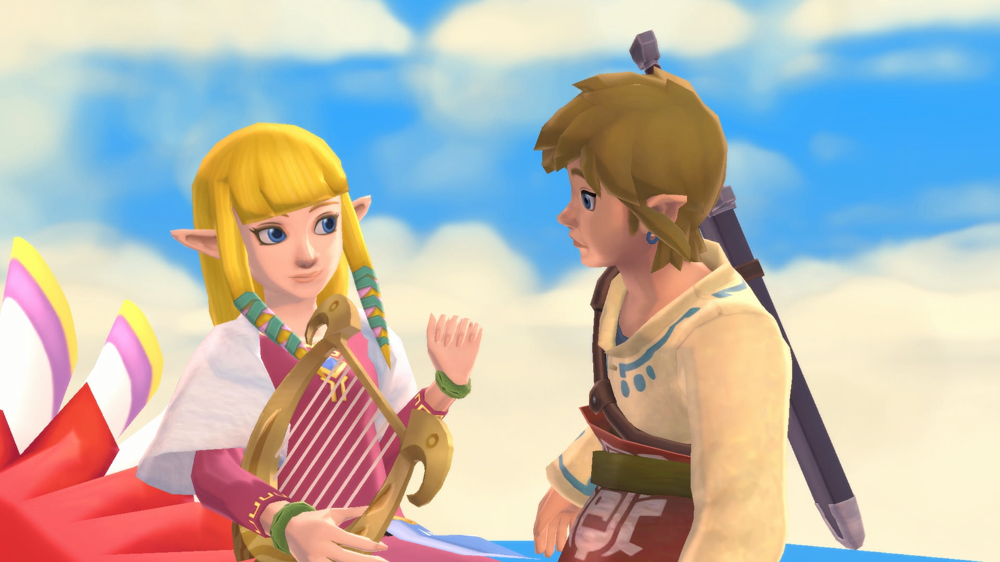
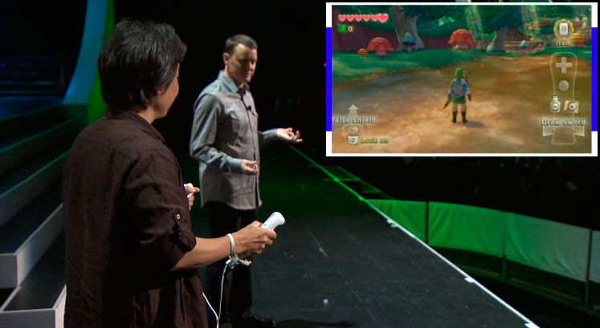
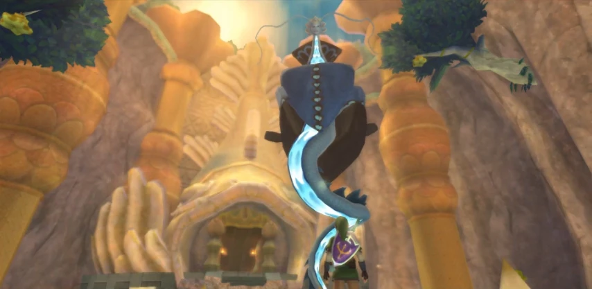

Skyward Sword - the Zelda Game That Flew Too Close to the Sun

How the Hero of Time arrived at exactly the wrong time
18/08/2026
Skyward Sword is an unlucky game. It's pretty universally agreed by both critics and fans to be the worst and least popular 3D Zelda game, and I see nobody really shooting for it as a favourite from an aesthetic point of view. I'm not really seeing the lesbians locking in with Skyward Sword Link profile pics like they do with Wind Waker and Twilight Princess Link. People still like it, clearly, but it's also the only 3D Zelda out of all seven that ranks below 4/5 stars on Backloggd.
Playing Skyward Sword now... I feel bad for it. Maybe it's just my built in response to root for the red-headed stepchild, but I also just think Nintendo flew a bit too close to the sun with this one (pun intended). If this game came out earlier, or later, in a different world - there's so many little changes that could have let this game flourish way more. Instead, the public perception of this game is practically an eye-roll.
RIGHT PLACE, WRONG TIME
It's abundantly clear to me that Skyward Sword would have been infinitely more popular if it came out even just a few years earlier in the Wii's lifespan. In the mid to late 2000s, the Wii was on top of the world. Motion controls are mocked now, but in 2006? The world was alight with shaking a bit of plastic to play pretend Tennis. Heck, Link's Crossbow Training is a gallery shooter with a Twilight Princess skin, and at the time of it's release it was the 3rd best selling Zelda game. That's right, Link's Crossbow Training is a better selling Zelda game than A Link to the Past, Majora's Mask and Wind Waker. Crazy, right?
Early in the Wii's life, people were on board for serious games with a little bit of waggle. Twilight Princess is an obvious benefactor, but Super Mario Galaxy is maybe a clearer example. Everyone loves Galaxy. The motion controls did not prohibit that game from being one of the most beloved ever made by literally everyone ever. I think it's probably the game I universally hear as "one of the greatest ever made." I think if Skyward Sword had been more contemporary with Galaxy, maybe an '08 or '09 release, it would have been welcomed with open arms. Instead, it was basically a fatal blow to motion controls in mainstream gaming, after a series of 1-2-punches to the gut.
By the late 2010s; the Wii, more than any other console, became known for "shovelware". There were still quality experiences using Motion Controls around this time (Wii Sports Resort is still a beloved flower in Nintendo's garden), but from the outside looking in, it felt like every Wii game on store shelves was a licence tie in game or an asset flip with shoe-horned motion controls. Do I, personally, feel like there was more "shovelware" on Wii than say, PS2? Eh... maybe a little? Not noticeably more. But because the shovelware on Wii was inherently tied to a gimmick, people began to resent that gimmick more and more.
Then along came my early 20s hyperfixation, the Kinect - which was kind of the death knell for motion controls. Not at first, mind you, the Kinect was actually a success financially; but the motion controls had breached their containment zone. Now that other console manufacturers were hopping on the bandwagon, it was officially a trend. Trends are never timeless.
And if there's one thing people view Zelda as: it's timeless. And so Skyward Sword comes out, is labelled a gimmicky and trend following. It feels... dated. Which is ironic, because if anything Skyward Sword is also way ahead of it's time.
WRONG PLACE, WRONG TIME
It's no secret that Skyward Sword is known for a technical hiccup or two. Another reason why it was doomed from the get go was that awful E3 showcase with the tech bugging out on stage, a showcase so cringe-inducing that it (and this is just my theory) led to the creation of Nintendo Directs later that year. Nintendo did not want to mess with live demos again after that.

Still tough to look back on.
Playing the game now, it's still a bit of a mess, or at least the Wii version is. I've heard the Switch version is a huge improvement in terms of motion accuracy. It seems like Skyward Sword bit off a lot more than it could chew - the swordplay is pretty fiddly, the game gets out of sync a lot, and the flying feels half-baked, like there was supposed to be more to the sky but it had to be cut back due to the Wii's capabilities.
The game also wants you to use motion controls for everything - every item, every key turn, every action. Sometimes it works, like the Beetle: easily one of the most fun and useful Zelda items! Often, it just asks wayyyyyyyy too much from the player. The idea was clearly to make an immersive experience, but you know what’s immersive? The ability to sit down and rest every once in a while. Skyward Sword is a damn workout, and ironically, it makes me feel like I’m playing a video game more than any other Zelda game. I never feel like I’m Link in this game, I feel like I’m fighting against Link.
I don’t think that the type of immersive fidelity Nintendo wanted from Skyward Sword was really possible until VR. Which really got me thinking… Skyward Sword would have been so good in VR!
VR is a space where people inherently expect motion controls, they are a natural part of the experience. Serious games like Half Life Alyx aren't panned because of "gimmicky motion controls", they are praised because of the immersive motion controls - heck, it's so seamless no one is even referring to them as motion controls! One of the most popular VR games, Beat Saber, is all about one-to-one swordplay, so that part would have felt a lot more intuitive. It all just feels so obvious to me now that what they were going for with Skyward Sword wasn't really accepted until VR got good.
I know a lot of people that didn't really like Skyward Sword's lack of interconnected world when it came out; but that aspect would have felt a lot better in VR as well. Even little stuff like turning the big chunky dungeon keys would have worked better in VR! But in that sense, it's kind of sad that Nintendo's never had a VR system before (no neither Labo nor the Virtual Boy count), so these ideas kind of got abandoned and burdened on Skyward Sword, like a scapegoat. Leaving it as the forgotten middle child between Twilight Princess and Breath of the Wild. Sucks to suck, man.
WAIT, WHAT DO I THINK ABOUT SKYWARD SWORD?
...Oh, a review? Uh, sure! I can do that.
I mean, kind of. Here's some preliminary nonsense at least:
Skyward Sword, beyond all of the motion control stuff, is a game that feels like a purposeful homage and remix of what came before. A beautifully written, hand-painted love letter to 3D Zelda, and from that viewpoint, it's an amazing anniversary game and a nice finale to this era of 3D Zelda. If Twilight Princess is a stark contrast to Wind Waker (see my last article for thoughts on that), then a lot of Skyward Sword feels equalising, especially to some of Twilight Princess's most outlandish moments. There's a very clear focus on always giving previous items new uses, making each addition to Link's arsenal feel concrete and important. There's nothing that you pick up in this game, use once, then toss in the bin - which feels like a direct response to Twilight Princess's more insular formula.
A very specific example of that Twilight Princess rebuttal is in the Tears collecting segments, a part of Twilight Princess I found particularly egregious. Skyward Sword's take on the idea feels like an intentional "this didn't work, but it deserves another shot," and in turn creates some of the most memorable and fun parts of the game. The atmosphere is mystical on the knife's edge of oppressive, the route planning is a totally different yet equally valid kind of puzzle to play with, and overall the whole thing feels much more Zelda and more streamlined than before.
Streamlined is the key word with Skyward Sword... to an extent. A lot of it's core ideas feel like attempts to "streamline" parts of previous Zelda games. The Goddess Cubes and Chests are a dead ringer or the Kinstone trading of Minish Cap, and the Sky is a clear homage to the Great Sea of Wind Waker. However, in trying to streamline these down, it cuts too close to the bone and snatches a lot of the endearing parts away.
Ironically, a lot of the other things the game does feels particularly un-streamlined: inelegantly wasting the player's time with fetch quests, persistent backtracking, and the game's second most controversial element: Fi. A character who pops up with mundane information every few seconds, who needs to tell you that your Wii Remotes batteries are low and blandly declares "There is a 95% chance you are suffering from a Skill Issue" whenever you lose a single heart. The intention of her character is unclear: a joke from the developers that didn't land? Genuine disrespect for the player's intelligence? A putrid jungle juice of "Por qué no los dos?" I have to take it as a side of camp or else I might wither away if she interrupts me again.
Visually, I think it's my favourite Zelda game. The backgrounds that look like Impressionist paintings take my breath away, and I love the hazy shader over it all that gives it this, ethereal, dream-like glow. I always lumped it in with Breath of the Wild visually, but it's much more distinct than I remember. It does such an amazing job of mixing the colour blocking of Wind Waker with the sepia palette of Twilight Princess to create this gorgeous pastel universe. Every time I see Skyloft, or the Floria Waterfall, I get lost in a dream of being there, relaxing and taking in the world.

I mean, look at this. I just want to lie down there, breathe in that fresh waterfall smell and just vibe.
That's about all I have to say for now - who knows? Maybe Skyward Sword will dive off a cliff in that last 20% I never played. Only time will tell!